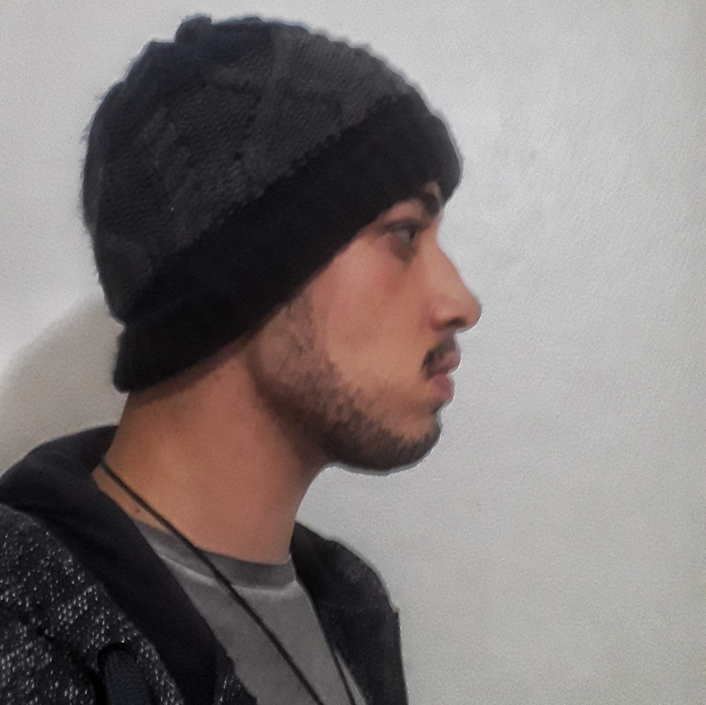
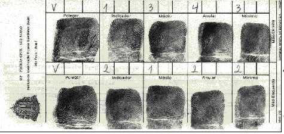
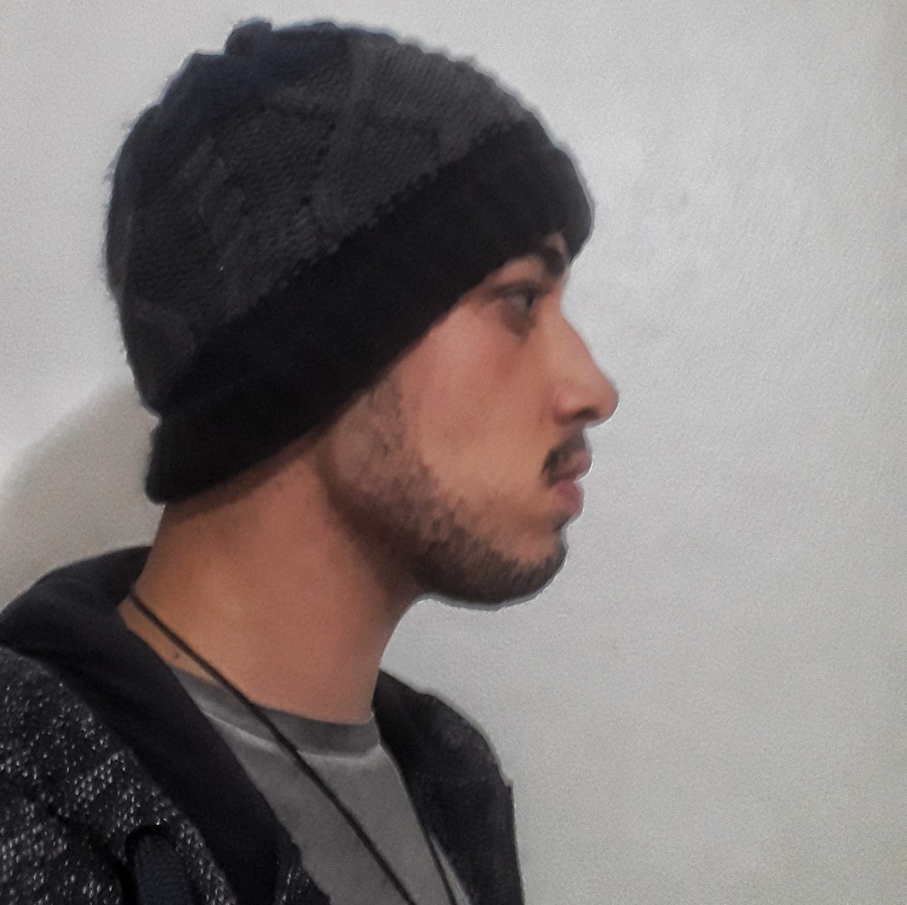
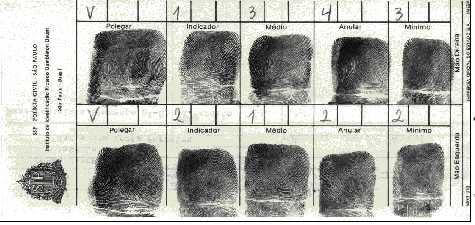

FICHA CRIMINAL
Dados Pessoais
Nome:
Gabriel Ciriaco Fornitano
Data de Nascimento:
19 de Fevereiro de 2002
Residência:
Penitenciaria de segurança máxima Roberto N.U. - Entrepelado (RS), Brasil
 



Crimes Cometidos
2017 - Latrocínio (Previsto no artigo 157)
Acusado de latrocinio no dia 17 de setembro às quatro da manhã na cidade de Ressaquinha, Minas Gerais. O suspeito foi visto bêbado nas redondesas do local do crime na noite anterior.
2018 - Furto (Previsto no artigo 155)
Acusado de furto no dia 4 de fevereiro ao meio dia na cidade de Vassouras, Rio de Janeiro. A vítima diz ter visto o suspeito invadir o seu quital e roubar um pé de coentro enquanto esta limpava a casa. Ninguém saiu ferido
2019 - Estelionato (Previsto no Art. 171 )
Acusado de estelionato por fazer parte de uma equipe que vendia produtos falsos por ligações. As investigações levaram a um endereço onde foram apreendidos dois carros de luxo e um apartamento milionário na cidade de Xique-Xique, Bahia. Os criminosos não estavam no local. Ele e seu parceiro Jorge continuam foragidos
2020 - Trafico de Drogas (Previsto no artigo 12)
O criminoso foi pego em flagrante distribuindo dolly citrus, ajinomoto e açafrão do reino em uma festa clandestina no dia 25 de dezembro na periferia da cidade de Feliz Natal, Mato Grosso. O condenado escapou da prisão no dia seguinte, investigações levaram até seu amigo Jorge, que através de um telefonema, foi capaz persuadiu os guardas a soltarem o preso
2021- Assalto a mão armada (Previsto no artigo 12)
Preso em flagrante na tentativa de roubar um violão de uma loja de instrumentos na cidade de Não Me Toque, Rio Grande do Sul
Sobre o Criminoso
Criminoso altamente qualificado, perigoso e extremamente agressivo. Especializado em formação de quadrilha e persuasão
Caso tenha conhecimento de alguma informação que possa ajudar nas investigações, entre em contato:
E-mail: policiafederal@gmail.com
Telefone:

+55 (12)4002-8922